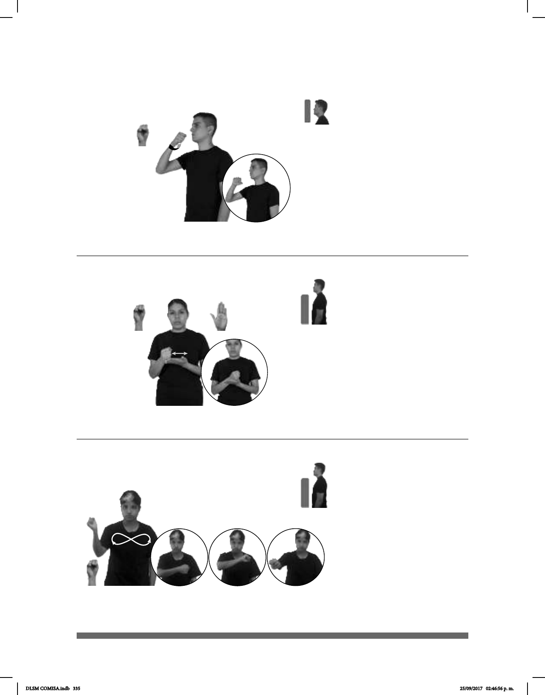

335
Seña: SM
S.1
Palma hacia abajo.
A la altura de la bar-
billa.
La mano se
mueve hacia arriba y hacia abajo
Isla ubicada al este de
China cuya capital es Taipéi.
TAIWÁN ISLA
Taiwán es una isla.
(S-124)
Seña: SB
MD S.1, MB B-P.2
MD palma hacia adentro
MB palma hacia arriba.
A la altura del pecho. MD
sobre MB.
MD recto de atrás hacia
adelante repetidamente.
sust. f. Plástico rectangular que
tiene grabado el nombre y el
número de cuenta del cliente de un
banco o casa comercial, en el que
comprar artículos o pagar servicios a
crédito.
pos-MI TARJETA-DE-CRÉDITO pro-YO PAGAR
Yo pago con mi tarjeta de crédito.
(S-125)
Seña: SM
S.1
Palma hacia afuera.
A la altura de los hombros, de
derecha a izquierda y de izquierda a derecha.
El brazo se mueve formando un arco
de ida y de vuelta.
Simula la acción de mover una
raqueta de Tenis.
sust. m. Juego en el que dos o cuatro
jugadores, en una cancha rectangular dividida en
dos por una red, golpean con raquetas una
pelota, que debe pasar sobre la red y botar en
terreno
contrario; si el oponente no consigue devolver la
pelota con la raqueta a la cancha contraria sin que
la pelota haya botado dos veces pierde ese punto.
DEPORTE pos-SUYO TENIS ÁREA COLOR BLANCO
El tenis es el deporte blanco.
(S-126)
DLSM COMISA.indb 335 25/09/2017 02:46:56 p. m.